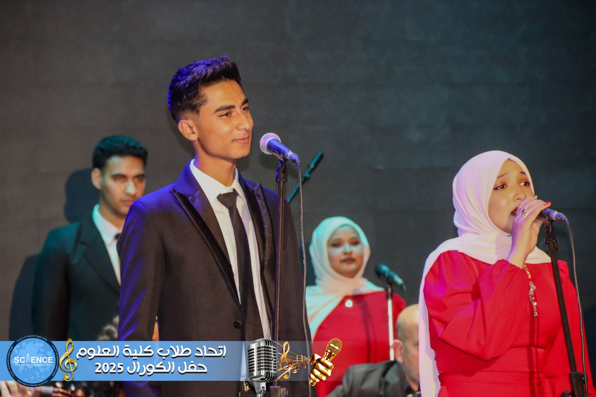

وقال ايه
ادهم السيسي وهو يعزف بالجيتار علي اغنية قال ايه

Adham Elsisi is a talented singer and guitarist who discovered his passion for music early in life. He kept developing his skills through practice, dedication, and performance, and he continues to grow with every new opportunity.

His journey was shaped by constant learning and a strong love for performing. Every stage he stepped onto helped him become more confident and expressive as an artist.

Music became more than a hobby for him; it became his way of sharing emotions, personality, and creativity with the world.
Through performance and practice, he built a unique voice that connects with people and leaves a lasting impression.
ادهم السيسي وهو يعزف بالجيتار علي اغنية قال ايه
ادهم السيسي و هو يعزف اغنية اه يا عيني يا ليل بالجيتار
عزف محمود السيسي و غناء سيف الاسلام في اغنية تاهت في الاماكن
عزف ديو مبين ادهم السيسي و نورالدين

حفل النبي دانيال مع غناء ادهم السيسي اغنية حبيتي شرطة مايله في فراغ

اغننيه الفيب لا كلمات و غناء ادهم السيسي

كلمات و غناء ادهم السيسي اغنية البيئة